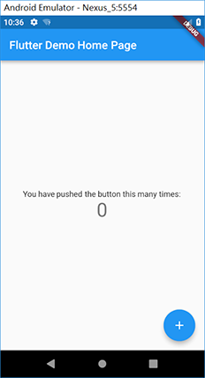
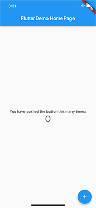

內容涵蓋
- 簡介
- 軟體安裝-Windows
- 軟體安裝-MacOS
簡介
Flutter為一開發套件用於開發混合式行動應用程式(Hybrid APP)。所謂的混合式行動應用程式是讓設計者使用相同的程式，讓應用程式執行於不同的行動平台(Android、iOS、Web APP、Mac OS與Windows)。當使用原生應用程式(iOS使用Objective-C/Swift、Android使用Java)進行開發，必須對個別平台撰寫應用程式，對程式開發公司是不符合效益。最早跨平台行動應用程式主要依靠網頁技術(HTML 5、CSS與Javascript)如Cordova或Ionic，將設計網頁內容封裝成WebView來顯示並提供存取原生設備的功能，這類型的行動應用程式一般稱為Web App，Web App最大的優點是進入障礙低與開發時間短，但是主要的限制是執行效能。
另一類接近原生效能的混合式平台稱為原生混合式平台(native hybrid platform)如React Native、NativeScript與Flutter，原生混合式平台與Web APP最大的不同是他會將程式編譯成對應平台執行程式，提升應用程式執行效能。本課程將介紹如何利用Flutter來進行跨平台行動應用設計，選擇Flutter最主要的原因是Flutter為Google作業系統Fuchsia應用程式開發平台，除此之外，React Native與NativeScript使用Javascript技術進行開發，因此在程式執行時並須藉由Javascript Runtime來執行，而Flutter則是將程式直接編譯成對應平台執行碼。
進入課程之前，先說明如何在Windows與MacOS作業系統下安裝Flutter，由於Android平台可在Windows或Mac OS下進行設計，但iOS只能在Mac OS下進行設計，所以在軟體的安裝部分將利用Windows進行Android平台設計，Mac OS進行iOS設計。
軟體安裝
Flutter可安裝於Windows、Mac OS、Linux與Chrome OS，這裡僅介紹Windows與Mac OS安裝，Linux與Chrome OS安裝請參考官方文件。
Windows安裝
軟體安裝分為 工具軟體Git安裝、Flutter SDK安裝、Java JDK 8安裝、程式編輯軟體Android Studio安裝、模擬器安裝、Android版權確認與Flutter doctor，作業系統為Windows 10(64位元)、硬碟需1.64GB以上硬碟空間。
-
安裝Git：下載並安裝Standalone Installer 64-Bit Git for Windows Setup，安裝過程請持續點選下一步，安裝完畢後，請至 控制台-系統及安全-系統-進階系統設定-環境變數-使用者變數-Path 中新增 Git\bin位置(預設會在 C:\Program Files\Git\bin)。
之後開啟命令提示字元視窗並執行下列命列：
git config --global user.name "自己英文姓名"
git config --global user.email 自己的email帳號
-
安裝Flutter SDK：下載Flutter SDK，下載後請將解壓縮下載檔案，並將解壓縮後flutter檔案夾放置於使用者自定的檔案夾(如c:\development)，請注意：勿將flutter檔案夾至於Program Files檔案夾中，因為Program Files檔案夾需要設定權限才能執行，之後將 flutter\bin路徑 加入環境變數參數 Path中。請定期開啟命令提示字元視窗並輸入 flutter upgrade 來更新flutter。
-
安裝Java JDK 8：下載並安裝Java JDK 8，請注意：開發Android應用只能使用Java JDK 8版本，並在使用者環境變數中新增JAVA_HOME環境變數，JAVA_HOME值為安裝JAVA JDK的路徑位置。同時請將JAVA JDK中bin的路徑設於環境變數Path中。
-
安裝程式編輯軟體Android Studio：下載並安裝Windows 64-bit Android Studio，並新增 使用者環境變數 ANDROID_HOME ，環境變數值為 Android Studio SDK路徑位置，請注意：預設Android SDK位置在 C磁碟機-使用者-[現在使用者]-AppData-Local-Android-sdk。
開啟Android Studio，選擇 Configure - Plugins後，選擇 Browse repositories，並在搜尋視窗輸入 flutter，選擇 Flutter language並點選 Install，請注意安裝Flutter套件時會同時安裝 Dart語言套件，請記得選確定。安裝完套件必須重新啟動Android Studio。重啟Android Studio後，請至SDK Manager中SDK Tools安裝Google USB Driver與Intel x86 Emulator Accelerator，並不定期更新Android SDK。
-
安裝模擬器：請注意模擬器只需設定一次，除非設計者想要將project執行於不同的模擬器，才須設定多個模擬器。請使用Android Studio中AVD Manager來設定模擬器(選擇 Tools - Android - AVD Manager，選擇Create Virtual Device並選擇對應模擬器，設定中Emulated Performance請選擇 Hardware GLES 2.0，其他保留預設後選擇Finish。之後請開啟設定模擬器。
-
Android版權確認與Flutter doctor：請開啟命令提示字元視窗並輸入
flutter doctor --android-licenses
版權確認請依照問題回答yes，最後在命令提示字元視窗並輸入
flutter doctor
確認所有安裝都正確。
Windows平台第一個Flutter project
在Android Studio請選擇 New Flutter project，接下來確定Flutter SDK位置、設定Flutter project name(名稱)、organization(反轉domain name如tw.edu.stust.mis)及platforms(開發平台)後點選 finish 建立project。project建立後，請開啟模擬器並點選執行按鈕，結果如下圖：

Mac OS安裝
Mac OS軟體安裝分為Flutter SDK安裝、安裝Xcode、模擬器安裝、Android版權確認與Flutter doctor，作業系統為Mac OS、硬碟需2.8GB以上硬碟空間。
-
安裝Flutter SDK：下載Flutter MacOS SDK。
開啟terminal應用程式，並利用mkdir來建立flutter SDK放置的目錄(如mkdir development)。
在terminal中輸入flutter SDK檔案夾(如cd development)，接著輸入 cp -r ~/Downloads/flutter .，它會將整個下載flutter檔案夾複製至flutter SDK檔案夾。之後輸入cd並按下輸入鍵回到根目錄。
在terminal中輸入 nano .bash_profile
輸入 export PATH="$PATH:/Users/使用者帳號/flutter SDK目錄/flutter/bin"，之後按下 Ctrl+O儲存檔案，按下Ctrl+X離開nano編輯器，之後在terminal中輸入chmod 700 .bash_profile後按下輸入鍵，同時關閉並重新開啟terminal後，輸入 echo $PATH來確認flutter/bin路徑在PATH中。
-
安裝Xcode：下載並安裝Xcode，安裝完畢後請在terminal應用程式中輸入
sudo xcode-select --switch /Applications/Xcode.app/Contents/Developer
sudo xcodebuild -runFirstLaunch
sudo xcodebuild -license
Mac OS平台第一個Flutter project
-
開啟terminal應用程式進入project目錄
-
輸入 flutter create PROJECT名稱 來建立project(如 flutter create testapp)
-
輸入 cd PROJECT名稱 進入project目錄(如 cd testapp)
-
輸入 open -a Simulator 開啟模擬器
-
輸入 flutter run 將project執行於iOS模擬器(如下圖)，使用者可使用Xcode進行project編輯
